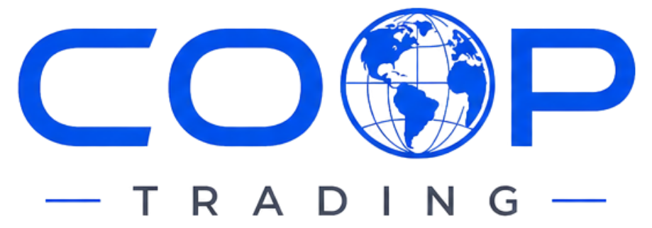
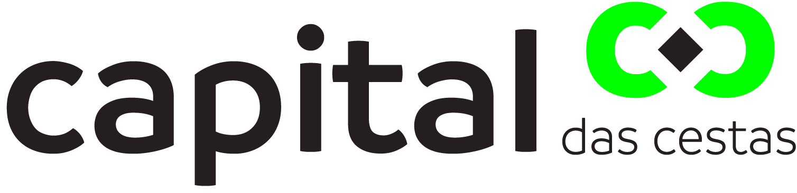
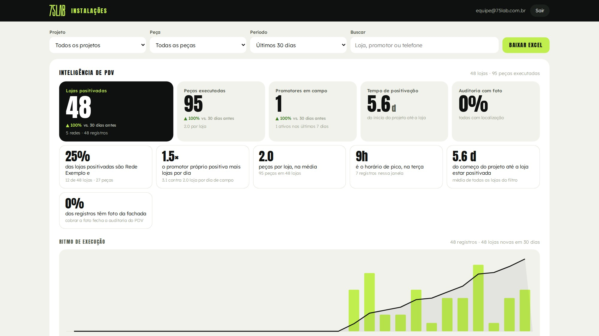
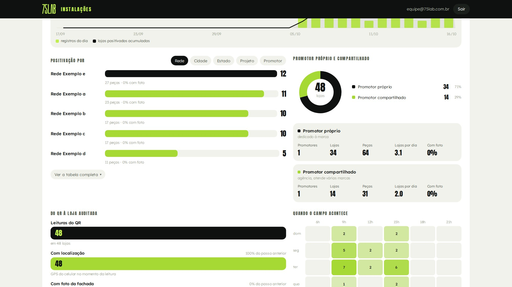
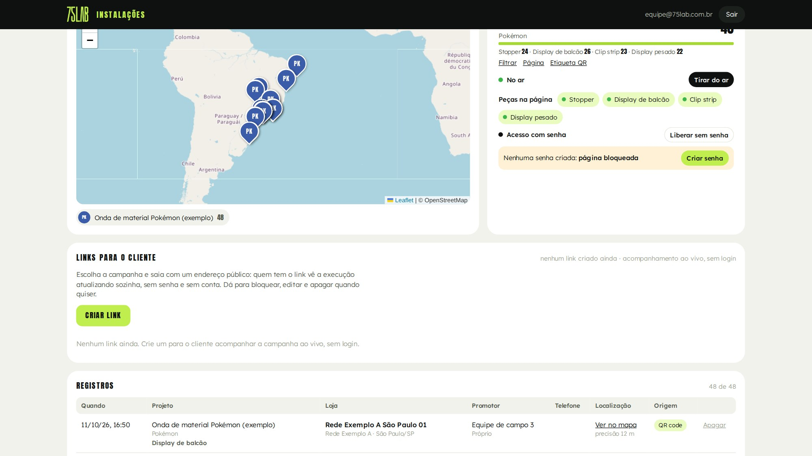

01 / 12
Proposta para a Pokémon · outubro de 2026
Cada peça da onda vira prova de execução.
A Pokémon investe no material. Agora ela vê onde ele chegou.
02 / 12
Quem desenha a peça já teve de instalar e cobrar peça igual.
Caique Becker
Cofundador · Head de Trade
Veio do varejo. Conhece o ponto de venda por quem opera a loja: layout, execução e a régua que aprova ou barra a iniciativa da indústria.
Daniel Coimbra
Cofundador · CEO
Veio da indústria. Pensa a marca pelo resultado: lançamento, categoria e estratégia comercial que precisa virar venda na ponta.
Marcas que confiam na 75 LAB


 RiachueloTCLGrupo PereiraDrogarias DPSP
RiachueloTCLGrupo PereiraDrogarias DPSP
Fonte: trajetória dos sócios e carteira de clientes da 75 LAB, 2025 e 2026.
03 / 12
Já olhamos a loja de cartas por dentro. Falta provar a execução.
Jun/2026Análise de potencial em PDV
Visibilidade e compra por impulso no ponto de venda.
05/08/2026Jornada do Treinador
4
territórios de loja para organizar o canal.
Set/2026Pesquisa Retail
69
lojas em 28 cidades, com coleta de foto, GPS e data.
AgoraAuditoria da próxima onda
O mesmo olhar de campo, agora sobre o material que a Pokémon financia e a COPAG instala.
Fonte: projetos da 75 LAB para a Pokémon em 2026 (Análise de potencial em PDV, Jornada do Treinador e roteiro da Pesquisa Retail).
04 / 12
A Pokémon paga o material, mas não enxerga onde ele foi parar.
InvestePokémon
Paga o material de ponto de venda.
ExecutaCOPAG
Instala nas lojas e não precisa compartilhar o dado.
VendeLoja
Onde o material deveria estar, e o shopper decide.
paga e entrega
instala
hoje o dado para aqui
QR na base da peça + painel: o caminho de volta, da loja para a Pokémon
Fonte: briefing da Pokémon à 75 LAB, 16/10/2026.
05 / 12
A etiqueta
O shopper não vê o QR. O instalador sempre vê.
Etiqueta na base ou no verso de cada peça, colada antes da expedição. Nunca na frente.
Fonte: proposta 75 LAB para a Pokémon; sistema Produtos 75 LAB.
06 / 12
Sistema Produtos 75 LAB · exemplo Pokémon
Em um minuto o instalador confere a montagem e registra a loja.
1Lê o QR com a câmera, sem baixar app
2Confere montagem, medidas e checklist
3Informa a loja e tira a foto da fachada
Fonte: sistema Produtos 75 LAB, páginas reais com dados de exemplo (loja e equipe fictícias).
07 / 12
A Pokémon acompanha a onda ao vivo, sem login.



Painel de exemplo · dados fictícios
- Lojas positivadas e ritmo do campo, dia a dia
- Positivação por rede, cidade, estado e promotor
- Link só da Pokémon: sem login, com validade, e o telefone nunca aparece
Fonte: Painel de instalações da 75 LAB, tela real com dados de exemplo (redes e equipes fictícias).
Display pesado
No display pesado, o QR registra a montagem e a etiqueta mostra onde ele está.
QR na base
O instalador registra a montagem com foto, no mesmo fluxo das peças leves.
Etiqueta de localização
Escondida na estrutura. A posição é conferida em revisita, sem alerta em tempo real.
Conferência sem depender da memória de ninguém.
08 / 12
Fonte: proposta 75 LAB para a Pokémon.
09 / 12
5
A régua da COPAG passa a ser medida, loja a loja.
01Tempo de implantaçãoDias entre a saída da onda e o registro em cada loja
02Lojas instaladasLojas com registro contra as planejadas
03Lojas positivadasQuais lojas têm material e quais não têm
04Base de lojasRede, cidade e estado de cada loja que vende
05Book de fotosFachada e peça, loja a loja, da execução
Fonte: briefing da Pokémon à 75 LAB, 16/10/2026; indicadores do Painel de instalações.
10 / 12
Os registros viram o mapa de lojas que a Pokémon não tinha.
Loja com material vende mais?
Cruza a positivação com a venda que a Pokémon tiver por loja ou região.
Quem mais vende tem mais material?
Compara a presença de material com a venda de cada região.
Que loja importante ficou sem?
Lojas-chave da lista da Pokémon que não aparecem com registro.
Fonte: Painel de instalações da 75 LAB, tela real com dados de exemplo. O cruzamento com venda depende do dado de venda da Pokémon.
11 / 12
A auditoria entra na onda sem atrasar a COPAG.
Antes da saídaPreparar
- Projeto da Pokémon criado no sistema
- Etiqueta gerada e enviada a quem produz as peças
- Colada na expedição
em sequência
Semanas 0 a 2 da ondaInstalar e registrar
- COPAG instala e o QR registra
- Link ao vivo aberto no primeiro registro
em paralelo
FechamentoEntregar
- Relatório da execução
- Mapa de lojas e book de fotos
DepoisRevisitar
- Leitura periódica dos displays pesados
Fonte: proposta 75 LAB para a Pokémon. As semanas se contam a partir da saída da onda, conforme a data de saída que a COPAG confirmar.
12 / 12
Ideia boa é a que acontece. E a que se prova.

Próximo passo: 30 minutos para alinhar a lista de lojas e as peças da onda, com quem vai produzi-las.
Razão social75 LAB Estratégia, Design e Produção Ltda
CNPJ 55.470.982/0001-77
EndereçoCENU · Torre Norte
Av. das Nações Unidas, 12.901, Brooklin
São Paulo, SP · 04578-910
ContatoDaniel Coimbra · CEO
daniel.coimbra@75lab.com.br
75lab.com.br · @setecincolab
Fale conosco no WhatsApp